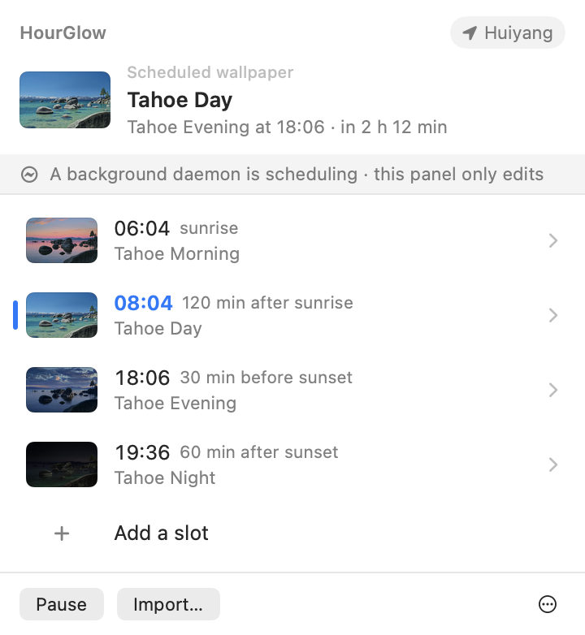
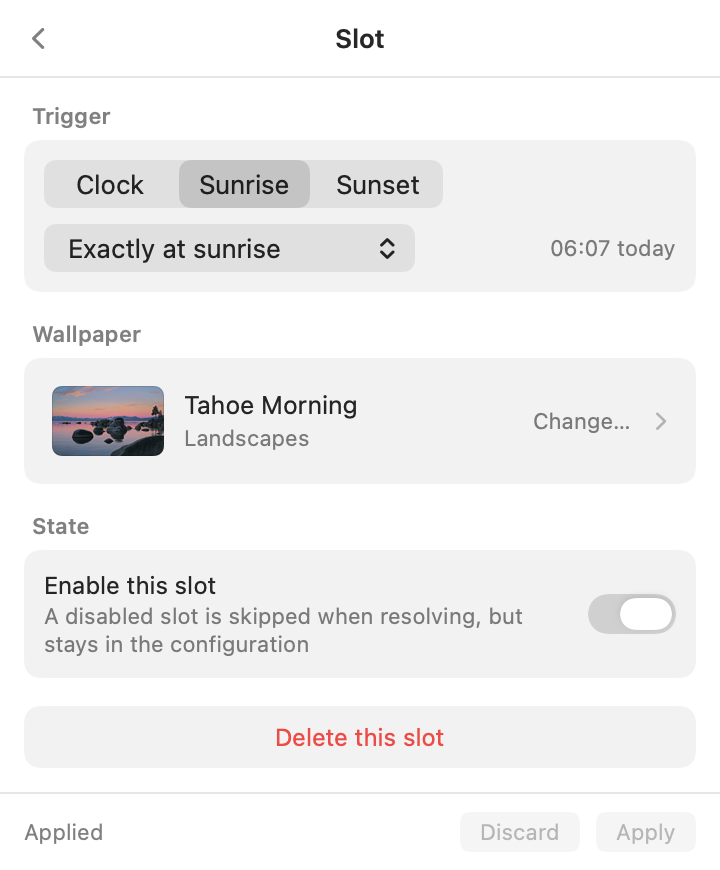
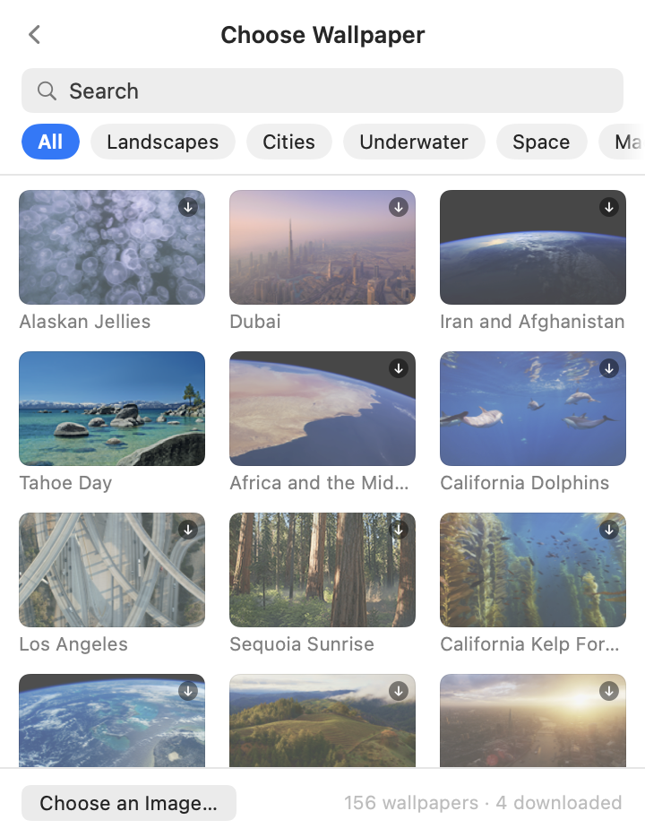

Any wallpaper.
On the sun's schedule.
A tiny, open-source macOS menu bar app that switches system aerials or your own images by time, sunrise and sunset.
Download for macOS 26
Free · Open source · Native Swift · Under 5 MB
- 06:04Morningsunrise
- 08:04Daysunrise +2 h
- 18:06Eveningsunset −30 min
- 19:36Nightsunset +1 h
One panel in the menu bar. No Dock icon, no window.



Set it once. Forget it.
- Any wallpaperAll 156 system aerials, a folder of stills, or any image on disk. HourGlow sells nothing; it schedules what you already have.
- Any number of slotsTwo, four or twenty-four. Each fires at a fixed time, or at sunrise or sunset with an offset.
- Sun times computed on your MacThe NOAA algorithm runs locally and follows the seasons. No network, no account.
- Catches up after sleepLid closed through a switch? On wake it applies the wallpaper that should be showing.
- No pollingNo background loop. It wakes once at the next switch, then sleeps.
- Free, open source, native SwiftApache 2.0, zero third-party code, under 5 MB.
Nothing hidden. Here is exactly what it does.
It changes one file, and you can see every byte it sends.
- Edits one filemacOS keeps wallpaper settings in
Index.plistunder your Application Support folder. HourGlow rewrites the wallpaper entry there and restartsWallpaperAgent. Nothing else on disk changes. - Backs it up firstEvery write begins by copying that file to
Index.plist.hourglow.baknext to it. No backup, no write. Its own files live in~/Library/Application Support/HourGlow. - Needs no permissionsLocation is optional, asked once, stored as a plain latitude and longitude; pick a city instead if you'd rather not. Launch at login is a normal login item you can switch off in System Settings.
- Sun times stay on your MacThe NOAA solar position algorithm runs locally. No sun service, no account, no telemetry.
- Talks to GitHub once a dayOnly to check for a new release, and only while automatic updates are on. A download is checked against its hash and code signature before it replaces anything. Searching a place name the built-in city list doesn't know asks Apple's MapKit, then OpenStreetMap.
- Open sourceApache 2.0. Read the code, build it yourself in one command, or report a problem privately.
Install in a minute.
Not notarized, so macOS asks once. Then it just runs.
- Download, unzip, drag to Applications.
-
Let it through once.
$ xattr -dr com.apple.quarantine /Applications/HourGlow.app - Open it.
The Tahoe schedule is already set up.
Also a command line.
Same engine, headless.
$ hourglow-cli now
$ hourglow-cli simulate 2026-12-21
$ hourglow-cli import ~/Pictures/zhangjiajie
$ hourglow-cli agent install